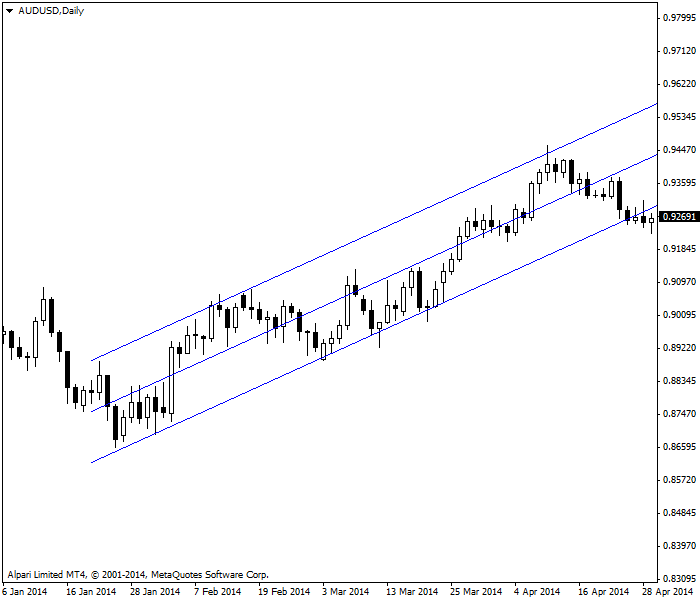
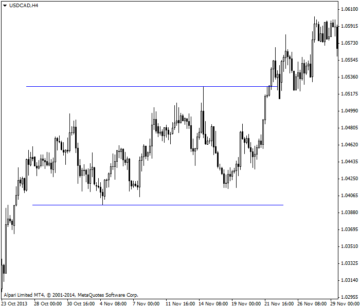
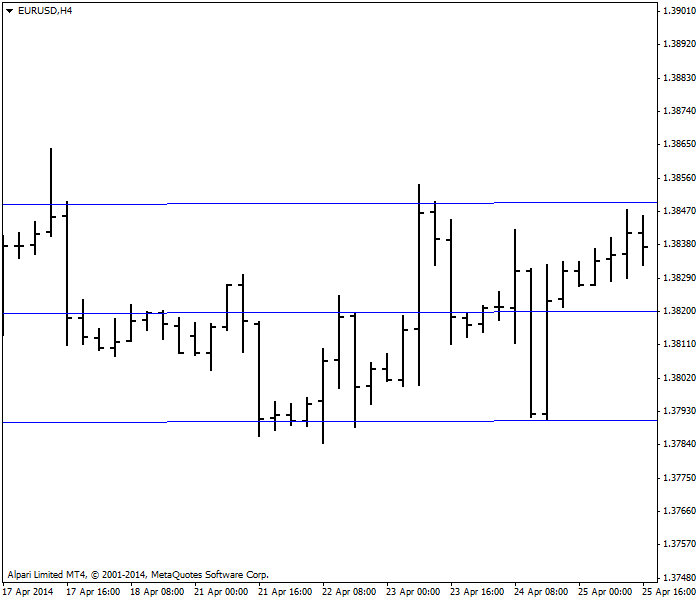
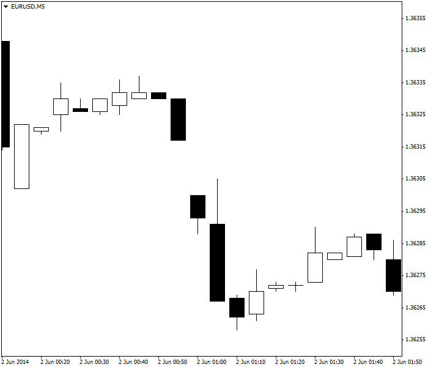
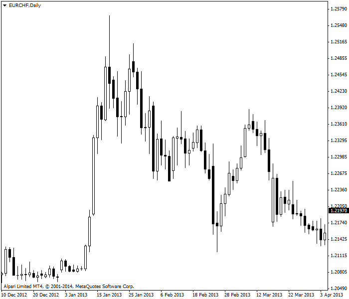

<!DOCTYPE html>
<html>
</html>
<head>
  <meta charset="utf-8">
  <meta http-equiv="X-UA-Compatible" content="IE=edge">
  <title>外汇站（fx-z.com） - 市场分类</title>
  <meta name="description" content="">
  <meta name="viewport" content="width=device-width, initial-scale=1">
  <meta name="robots" content="all,follow">
  <!-- Bootstrap CSS-->
  <link rel="stylesheet" href="vendor/bootstrap/css/bootstrap.min.css">
  <!-- Font Awesome CSS-->
  <link rel="stylesheet" href="vendor/font-awesome/css/font-awesome.min.css">
  <!-- Google fonts - Roboto-->
  <link rel="stylesheet" href="https://fonts.googleapis.com/css?family=Roboto:400,300,700,400italic">
  <!-- owl carousel-->
  <link rel="stylesheet" href="vendor/owl.carousel/assets/owl.carousel.css">
  <link rel="stylesheet" href="vendor/owl.carousel/assets/owl.theme.default.css">
  <!-- theme stylesheet-->
  <link rel="stylesheet" href="css/style.default.css" id="theme-stylesheet">
  <!-- Custom stylesheet - for your changes-->
  <link rel="stylesheet" href="css/custom.css">
  <!-- Favicon-->
  <link rel="shortcut icon" href="img/favicon.png">
  <!-- Tweaks for older IEs--><!--[if lt IE 9]>
    <script src="https://oss.maxcdn.com/html5shiv/3.7.3/html5shiv.min.js"></script>
    <script src="https://oss.maxcdn.com/respond/1.4.2/respond.min.js"></script><![endif]-->
</head>
<body>
  <div id="all">
    <div class="container-fluid">
      <div class="row row-offcanvas row-offcanvas-left"> 
        <!--   *** SIDEBAR ***-->
        <div id="sidebar" class="col-md-4 col-lg-3 sidebar-offcanvas">
          <div class="sidebar-content">
            <h1 class="sidebar-heading"> <a href="https://fx-z.com">fx-z.com</a></h1>
            <p class="sidebar-p">介绍外汇相关的基本知识，告诉您如何进行自己的技术面和基本面分析，讲解先进的交易理念，并且为您阐述失败交易者与专业交易者之间的真正区别。 </p>
            <p class="sidebar-p">通过这些课程的学习，您将学会如何根据自己的优势来应用情绪分析，还将了解真实世界的事件会对货币汇率产生什么影响，央行在外汇市场中所发挥的作用，以及交易者在颇受欢迎的即期外汇交易中有哪些选择方案。 </p>
            <ul class="sidebar-menu">
                <!-- Link-->
                <li class="sidebar-item"><a href="https://fx-z.com" class="sidebar-link">首页</a></li>
                <!-- Link-->
                <li class="sidebar-item"><a href="cihui.html" class="sidebar-link">外汇词汇</a></li>
                <!-- Link-->
                <li class="sidebar-item"><a href="ebook.html" class="sidebar-link">获取外汇电子书</a></li>
            </ul>
            <p class="social"><a href="https://www.cn-forextime.com/zh?partner_id=4920383" target="_blank"data-animate-hover="pulse" class="external facebook"><i class="fa fa-eur"></i></a><a href="https://www.cn-forextime.com/zh?partner_id=4920383" target="_blank" data-animate-hover="pulse" class="external gplus"><i class="fa fa-gbp"></i></a><a href="https://www.cn-forextime.com/zh?partner_id=4920383" target="_blank" data-animate-hover="pulse" class="external twitter"><i class="fa fa-rmb"></i></a><a href="https://www.cn-forextime.com/zh?partner_id=4920383" target="_blank" title="" class="external instagram"><i class="fa fa-dollar"></i></a><a href="https://www.cn-forextime.com/zh?partner_id=4920383" target="_blank" data-animate-hover="pulse" class="email"><i class="fa fa-money"></i></a></p>
            <div class="copyright text-center text-md-left">
             
              
            </div>
          </div>
        </div>
        <!--   *** SIDEBAR END ***  -->
        <!--   *** DETAIL ***-->
        <div class="col-md-8 col-lg-9 content-column white-background">
          <div class="small-navbar d-flex d-md-none">
            <button type="button" data-toggle="offcanvas" class="btn btn-outline-primary"> <i class="fa fa-align-left mr-2"></i>菜单</button>
            <h1 class="small-navbar-heading"> <a href="https://fx-z.com/10-2.html">下一篇 </a></h1>
          </div>
          <div class="row">
            <div class="col-xl-10">
              <div class="content-column-content">
                <h1>市场分类</h1>
    <p>
    进入一种货币头寸前，交易者必须知道市场气候是什么。我们将它称之为市场分类，即评估所见市场动向是趋势、区间震荡、平淡、随机还是波动。
</p>
<p>
    <strong>风吹向何方？</strong>
</p>
<p>
    最容易确定的两个市场是趋势市场和区间震荡市场。交易者可直观地分辨市场是处于趋势还是区间震荡中。如果交易者入场后，USD/JPY 每天上涨 50 点（即从 103.00 到 103.50，再到 104），交易者很容易认为货币对正位于上涨趋势。同样，如果数月内 USD/JPY 一直探底 101 且触顶 105，这将被视为区间震荡市场。市场处于趋势或区间震荡的时间占 90%，甚至是 95%，虽然断言任何数字都会引起较大的争议。散户交易者和一般交易者最容易从这些类型的市场赚钱。
</p>
<p>
    不过，交易者还通过多种动量指标来补充其直觉，以判断市场是趋势还是区间震荡。这些动量指标包括平均动向指数（ADX）、布林线、相对强弱指数（RSI）和平滑异动移动平均线（MACD）；我们之前的课程已涵盖这些指标主题。
</p>
<p>
    如果衡量趋势强度的 ADX 为 30 或高于 30，这说明货币对处于趋势中（可以为更高或更低）。ADX 高于 40 说明趋势非常强烈。若 ADX 低于 10，说明货币对正在区间震荡。类似地，如果 RSI 上升或 MACD 线走高，货币对似乎正处于趋势中。如果布林线变宽，说明这是趋势市场；而如果布林线收窄，则货币对可能正在区间震荡。参见下图。您无需用指标来亲眼验证货币是否处于趋势中以及趋势是否整齐有序。
</p>
<p>
     AUD/USD 货币对清晰的上涨趋势
</p>
<p>
    相反，下表显示一个区间交易环境，水平线标记其边缘限制。
</p>
<p>
     USD/CAD 处于区间震荡市场
</p>
<p>
    平淡市场往往让货币交易者疯狂，因为他们很难在这种环境中赚钱。在这种市场中，货币的波动范围非常窄，以致于图表上的价格变动非常小。这种市场通常出现在夏季假期，或全年各种假期以及年底；年底时，交易者已获得这一年的收益，没人会建立可能引起亏损的交易。请参见下图。在本图中，我们绘制了一条线性回归线，以强调这部分图表趋势为零。其高点与低点的差距非常小。
</p>
<p>
     EUR/USD 4 小时图表平淡市场
</p>
<p>
    有时，一项重要数据带来惊喜，或者主要央行公布令人意外的决定，市场会按照某种方向或其它方向急剧变动。在此之后，市场参与者不想以当前水平买入（或卖出），并希望等到新消息公布之后再进入交易。这种意外状况可能只持续几天，或者长达一个月（例如就业指标），但平淡或窄幅区间震荡市场可能会出现在这些情况中。套息交易往往在这种环境中发挥出色，因为交易者可以每天获得利息差异并且赚取利润，尤其是当基础外汇货币对保持稳定时。
</p>
<p>
    随机市场可能出现在趋势市场中，但大多数时候令市场感到意外。例如，货币对 EUR/USD 走高，且所有动量指标显示价格上涨到 1.4000——出现大量阻力点的位置。交易者认为该趋势会消失，或至少不超过 1.4000。之后有意外消息公布，欧元突破 1.4000，并进一步上探 1.4200。
</p>
<p>
    有时，外汇货币对会遇到关键反转日，这种情况出现在白天价格逆转时。例如，货币对可能向上突破前一日高点，这属于上升趋势，但之后货币对突然急跌，并且收盘价低于前一日低点，这又属于下跌趋势。
</p>
<p>
    请参见下图，它显示了一个随机变动。价格在开盘时出现缺口，这在一些证券行情（如 CRB 指数和黄金）中很常见，但在外汇行情中很少见。
</p>
<p>
     市场随机意外导致周日晚 EUR/USD 缺口
</p>
<p>
    意外事件（媒体标题，超出预期的数据集，预料之外的央行决定，大订单）时有发生，导致外汇货币对突破关键支撑/阻力点（斐波纳契阻力点，55、100 或 200 日 移动平均线等），推动市场玩家，尤其是黑匣交易者和其它模式交易者进入市场，以逆转头寸或建立顺应当前趋势的新头寸
</p>
<p>
    波动市场极为罕见，其推动力源于令人震惊的事件。以前，这些事件包括对国家领导人的暗杀或暗杀未遂（1981 年美国总统罗纳德·里根遇刺），2011 年 9/11 袭击以及2011 年 3 月日本大地震和海啸。另一个示例是发生于美国金融危机（2008 年底至 2009 年初）开始时狂热的去杠杆潮流；银行和公司纷纷卖出所有资产的盈利头寸，以冲抵次级抵押贷款或抵押贷款相关资产的亏损。交易动荡时，空仓即最好的持仓方式。
</p>
<p>
    如下图所示，货币显示出高波动性，在一些出现极端高点-低点的交易日尤为明显。
</p>
<p>
     由于瑞士国家银行决定将 EUR/CHF 货币对利率上限定为 1.2000，该货币对每日图表显示了大量价格波动。
</p>
<p>
    D您知道吗？虽然货币通常不会展现周期性趋势，但有时，资金流动可能有利于或阻碍某种指定货币。日本财年结束于 3 月 31 日；过去，日元曾极大地受益于财年结束前的资金汇回。随着“以市值计价”会计制度的建立，资金流入减少，因而对即期市场的影响也变小。另一个示例是欧盟向英国农民支付农场补贴（通常在秋季支付），这有时会影响 EUR/GBP。
</p>
<p>
    <br/>
</p>
<p>
    <br/>
</p>
              </div>
            </div>
          </div>
        </div>
      </div>
    </div>
  </div>
  <!-- JavaScript files-->
  <script src="vendor/jquery/jquery.min.js"></script>
  <script src="vendor/popper.js/umd/popper.min.js"> </script>
  <script src="vendor/bootstrap/js/bootstrap.min.js"></script>
  <script src="vendor/jquery.cookie/jquery.cookie.js"> </script>
  <script src="vendor/owl.carousel/owl.carousel.min.js"></script>
  <script src="vendor/masonry-layout/masonry.pkgd.min.js"></script>
  <script src="js/front.js"></script>
</body>